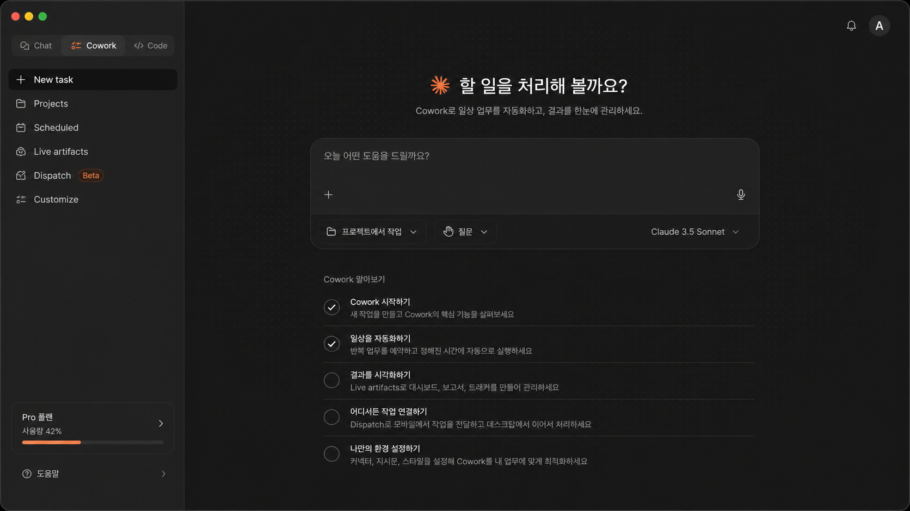
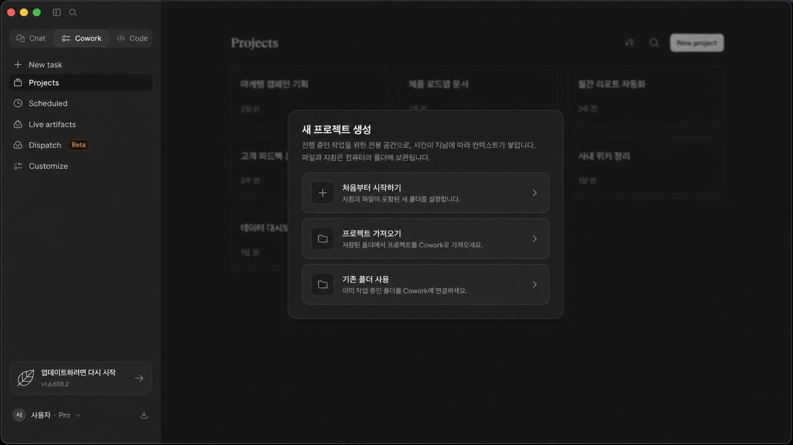
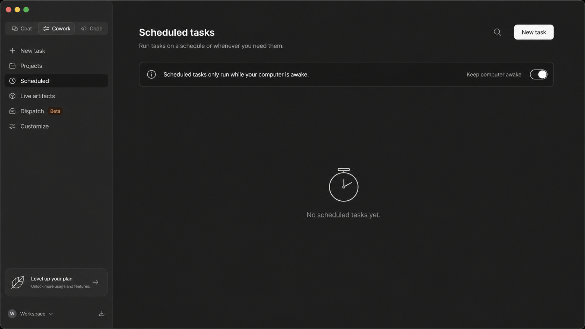
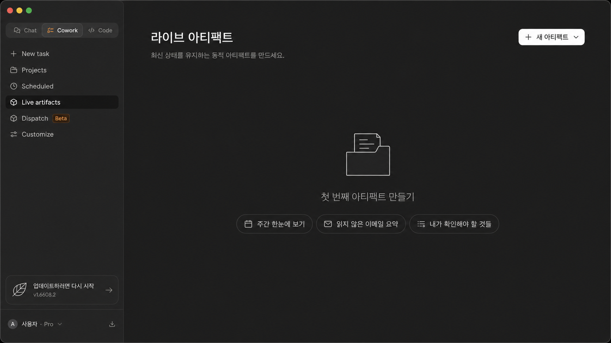

1. Cowork 홈새 작업을 만들고 프로젝트 맥락을 고르는 시작 화면입니다.

2. Projects작업 폴더와 지시사항을 묶어 반복 업무의 맥락을 보관합니다.

3. Scheduled tasks반복 보고, 정리, 점검 업무를 정해진 시간에 실행하도록 예약합니다.

4. Live artifacts계속 열어보고 갱신하는 체크리스트, 요약, 대시보드를 만듭니다.
개인 정보나 실제 대화가 들어가지 않은 가이드용 예시 이미지입니다. 실제 Claude Desktop/Cowork 화면은 업데이트와 사용 환경에 따라 달라질 수 있습니다.
1. 질문하지 말고 업무를 맡기세요
“좋은 콘텐츠 만들어줘”는 질문에 가깝습니다. “누구에게 보여줄지, 어떤 자료를 쓸지, 어떤 형식으로 받을지, 무엇을 피할지”를 알려주면 업무가 됩니다.
2. 업무 지시서 6요소
어떤 관점으로 볼지
최종 결과물이 무엇인지
참고할 원문, 메모, 파일
길이, 톤, 금지 표현
표, 목록, 초안, 카드 구성
좋은 결과인지 판단할 기준
3. Scheduled: 정해진 시간에 반복 업무 맡기기
스케줄은 “한 번 잘 된 업무”를 반복시키는 기능입니다. 처음부터 자동화하지 말고, 아래 프롬프트를 수동으로 한 번 성공시킨 뒤 예약하세요.
Claude Code 공식 문서 기준으로 예약 작업은 웹/데스크톱 또는 CLI의 /schedule 흐름에서 만들 수 있습니다. 실제 메뉴명은 환경에 따라 다를 수 있습니다.
4. Live Artifacts: 결과물을 보면서 고치기
Live Artifacts는 “답변을 읽는 것”보다 “결과물을 열어보고 수정하는 것”에 가깝습니다. 문서, 체크리스트, 표, 작은 화면 초안처럼 눈으로 확인해야 하는 작업에 쓰세요.
5. Dispatch: 지금 던지고 나중에 이어받기
Dispatch는 긴 작업을 지금 화면에서 붙잡고 있지 않고, 일단 맡긴 뒤 나중에 이어받는 감각으로 이해하면 쉽습니다. 이동 중에는 짧게 맡기고, 데스크톱이나 터미널에서 결과를 이어 확인하는 식입니다.
6. 업무 지시서 복붙 프롬프트
너는 내 업무 파트너야. 아래 일을 초안 → 검수 → 수정 순서로 같이 진행해줘. 역할: [예: 콘텐츠 기획자 / 회의록 정리 담당 / 고객문의 분류 담당] 목표: [최종 결과물] 자료: [붙여넣을 메모 또는 파일 설명] 제약: [말투, 길이, 금지할 표현, 꼭 포함할 내용] 출력 형식: [표 / bullet / 5장 구성 / 이메일 초안] 검수 기준: [좋은 결과물이라고 판단할 기준 3개] 먼저 초안을 만들고, 마지막에 “확인하면 좋은 점 3개”를 따로 적어줘.
7. 무엇을 맡겨야 할지 모를 때는 이 질문부터
아래 4개는 설명을 읽는 용도가 아니라, 바로 복사해서 Claude에게 붙여넣는 시작 질문입니다.
내가 매주 반복하는 업무를 보고, Claude에게 맡기기 좋은 순서로 5개만 골라줘. 위험한 업무는 제외해줘.
이 업무를 매주 자동으로 돌린다면 입력 자료, 실행 시간, 결과 확인 기준이 뭐가 필요할지 표로 정리해줘.
아래 내용을 바탕으로 한 페이지짜리 체크리스트 초안을 만들어줘. 내가 바로 고칠 수 있게 항목을 짧게 나눠줘. [내용 붙여넣기]
지금은 메모만 남길게. 나중에 작업할 수 있게 목표, 필요한 자료, 다음 행동 3개로 정리해줘. [메모 붙여넣기]
8. 같이 일하는 3단계
일단 첫 결과물을 받습니다.
좋은 결과인지 기준으로 확인합니다.
부족한 기준을 한 줄 더 붙여 다시 시킵니다.
9. 결과가 별로일 때 바로 쓰는 문장
수정 지시도 고민하지 말고 필요한 문장만 복사해서 이어 붙이면 됩니다.
10. 프로젝트/폴더가 필요한 순간
같은 업무를 반복하거나, 파일과 지시사항을 계속 이어가야 한다면 프로젝트나 작업 폴더가 필요합니다. Cowork 프로젝트는 관련 작업을 파일, 맥락, 지시사항, 메모리와 함께 묶는 작업공간으로 이해하면 쉽습니다.
- 매번 같은 설명을 반복한다.
- 참고 파일이 여러 개다.
- 결과물을 다음 작업에서 다시 써야 한다.
- Claude Code로 실제 파일을 만들거나 고치고 싶다.
11. Claude Code로 넘어가도 되는 기준
- 만들고 싶은 결과물을 한 문장으로 설명할 수 있다.
- 작업 폴더가 있다.
- 성공 기준을 3개 이상 말할 수 있다.
- Claude의 초안을 보고 무엇을 고칠지 말할 수 있다.
오늘 할 일
오늘 업무 하나를 골라 위 프롬프트에 넣어보세요. 완벽한 요청이 아니라, 초안 → 검수 → 수정까지 한 번 돌아보는 게 목표입니다.
Claude 첫 시작 가이드로 돌아가기 →